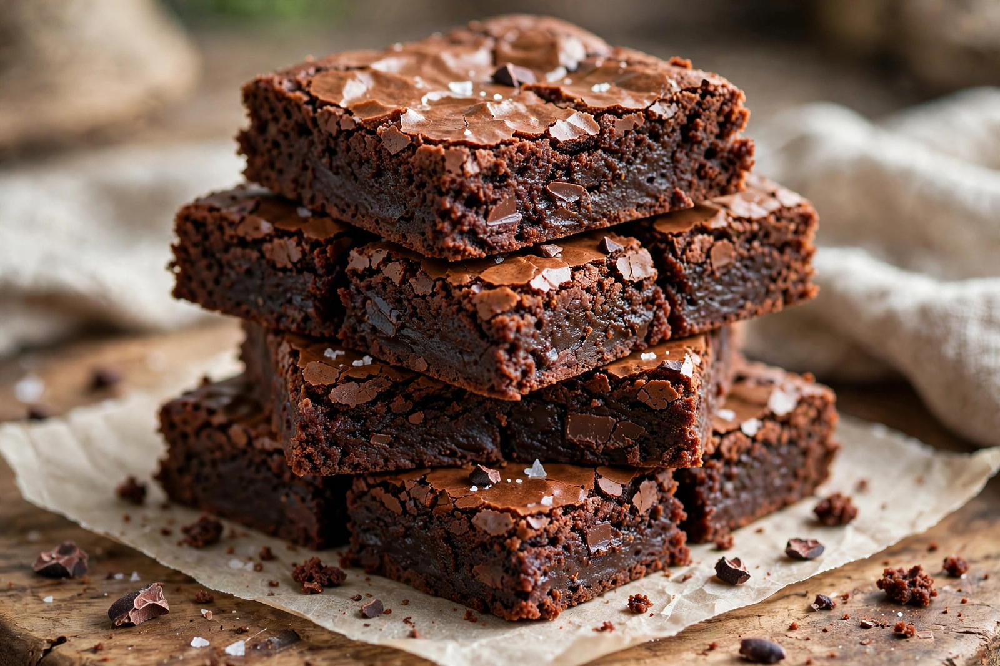

Wikipedia — the free encyclopedia

A chocolate brownie, or simply brownie, is a chocolate baked confection cut into squares or bars. Brownies come in fudgy, cakey and chewy textures depending on the ratio of butter and chocolate to flour, and may include nuts, frosting, chocolate chips or caramel. They are an American invention of the late 19th century.
The first printed references to brownies appear in the 1890s; the Palmer House hotel in Chicago claims a version created for the 1893 World's Columbian Exposition (still served, topped with walnuts and apricot glaze). Fannie Farmer's 1896 Boston Cooking-School Cook Book included a brownie recipe — though hers was a molasses cookie without chocolate. Recipes "by the 1906 edition" had evolved toward the modern chocolate bar.
Blondies replace cocoa with brown sugar and vanilla. Brownie sundaes, brownie mixes (popularised after the Second World War) and edge/corner-preference pans are part of brownie culture.